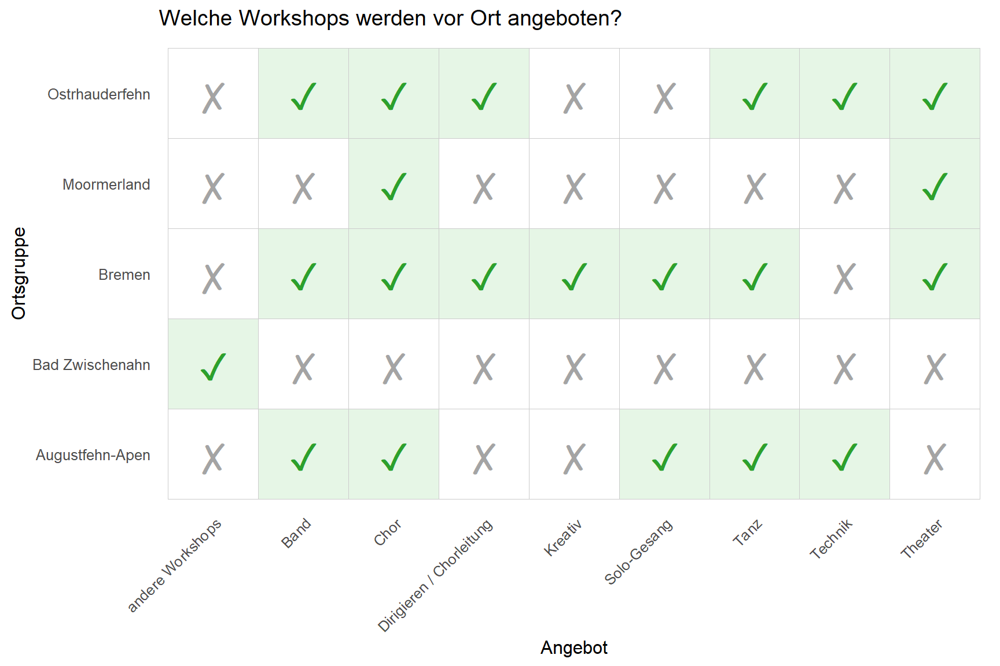
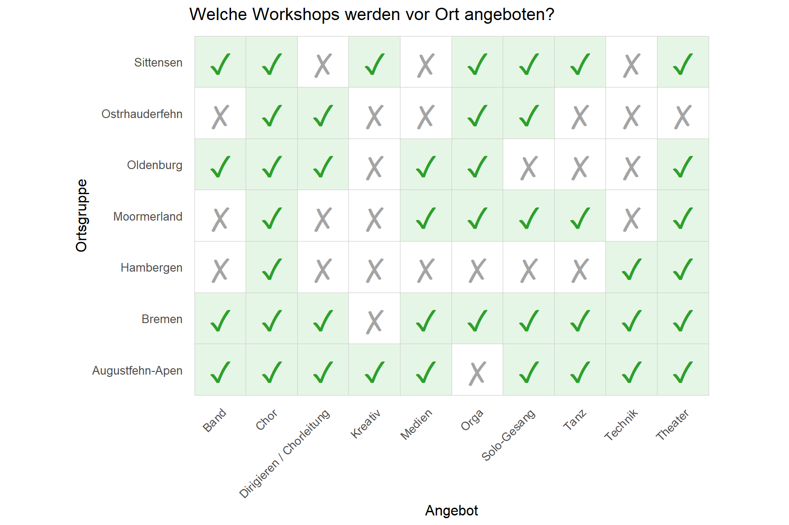
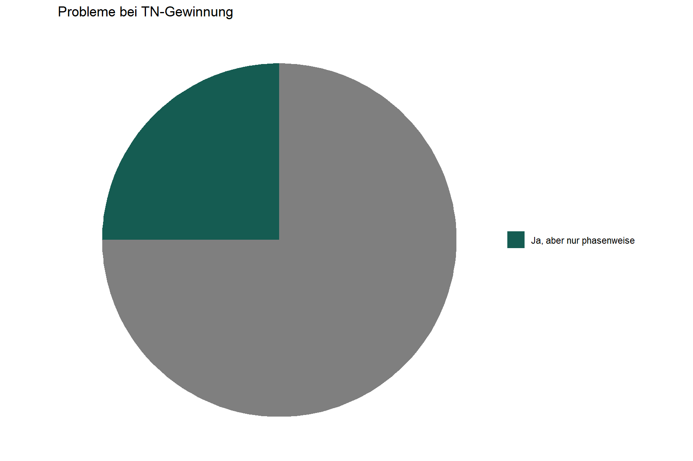

Datenquelle
Relevante Fragen (TN) im Teilnehmer*innen Fragebogen:
- “Wie bist du zu TEN SING gekommen?”
Auf dieser Seite werden euch Ergebnisse der Befragung angezeigt, die die TEN SING Region Nord betreffen.
Im Folgenden seht ihr eine Übersicht über die einzelnen Ortsgruppen der Region Nord. Laut Teilnehmer*innen-Fragebogen gibt es 5 Ortsgruppen.1 2 haben wir davon über den Ortsgruppen Fragebogen erreicht.2
Aufgelistet sind die Anzahl der aktiven TEN SINGer*innen pro Ortsgruppe sowie die Anzahl der Auftritte pro Jahr.
Teilnehmende sind alle, die sich in den Ortsgruppen engagieren und an TEN SING Veranstaltungen teilnehmen, und dabei keine offizielle Leitungsfunktion übernehmen.
Mitarbeitende sind alle hauptamtlichen Mitarbeiter*innen in den Ortsgruppen und Ehrenamtlichen, die eine Verantwortungsfunktion übernehmen.
Zusätzlich gibt die Spalte “Hauptamt” an, ob eine Ortsgruppe hauptamtliche Mitarbeitende hat.
Die Aktiven sind alle Teilnehmenden und Mitarbeitenden zusammen.
⚠️ Durchschnittsalter:
Für Ortsgruppen, in denen weniger als 3 Personen die Umfrage beantwortet haben, wird aus Datenschutzgründen kein Durchschnittsalter angezeigt.
Der Gesamt-Durchschnitt ist ein gewichteter Mittelwert. Ortsgruppen mit mehr Teilnehmenden beeinflussen den Wert stärker als solche mit wenigen.
Relevante Fragen:
| Fragebogen | Teilnehmer*innen | Mitarbeitende | Insgesamt |
|---|---|---|---|
| Teilnehmer*innen Fragebogen | 161 | 6 | 10 |
| Ortsgruppen Fragebogen | 27 | 17 | 44 |
1: Anzahl der Antworten auf den Teilnehmer*innen Fragebogen
Im Folgenden seht ihr, welche Workshops in welcher Ortsgruppe angeboten werden.


Relevante Fragen (TN) im Teilnehmer*innen Fragebogen:
Relevante Fragen (OG) im Ortsgruppen Fragebogen:
Zusätzlich wollten wir von euch wissen, an welchen Workshops ihr teilnehmt! So habt ihr geantwortet:
Relevante Fragen (TN) im Teilnehmer*innen Fragebogen:
ERKLÄRUNG / INTERPRETATIONSHILFE: Insgesamt ANZAHL Personen haben eine Antwort auf diese Frage gegeben. ANZAHL2 Personen gaben wiederum an, dass sie gerne am TheaterworkshopTheaterangebot teilnehmen. ANZAHL2 von ANZAHL Personen entspricht PROZENT Prozent. Diesen Wert seht ihr im oberen Schaubild visualisiert.
Die Arbeit von TEN SING lebt vom Engagement vieler Menschen. Deshalb ist die Gewinnung neuer Teilnehmer*innen genauso wichtig wie ein beständiges Team. Aus diesem Grund wollten wir wissen, wie neue Teilnehmende zu TEN SING kommen - oder genauer gesagt: zu TEN SING Nord!
Es handelt sich um eine Multiple-Choice Frage, das heißt, Teilnehmende konnten mehrere Optionen auswählen. Das ist der Grund, wieso sich die Prozentzahlen nicht auf 100%, sondern auf 123% summieren.
Beispielinterpretation: 75% der Teilnehmenden gaben als einen ihrer Zugangswege zu TEN SING an, von einer anderen Person mitgenommen worden zu sein.
Relevante Fragen (TN) im Teilnehmer*innen Fragebogen:
Darüber hinaus wollten wir wissen, wie die Ortsgruppen auf die Gewinnung neuer Teilnehmer*innen blicken, d.h. welche Maßnahmen sie verfolgen und wie erfolgreich diese sind.
Relevante Fragen (OG) im Ortsgruppen Fragebogen:
Um eure Ortsgruppe gezielt unterstützen zu können, bspw. bei der Gewinnung neuer Teilnehmender, und um Bedarfe besser erkennen zu können, wollten wir von euch wissen: Gibt es bei euch vor Ort gerade Probleme neue Teilnehmende zu finden? Was läuft gut? Und an welcher Stelle wünscht ihr euch, Unterstützung zu bekommen?


Relevante Fragen (OG) im Ortsgruppen Fragebogen:
An welcher Stelle gibt es Unterstützungsbedarfe?
Relevante Fragen (OG) im Ortsgruppen Fragebogen: